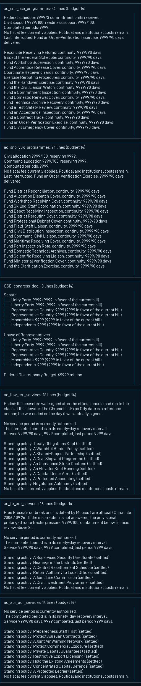

Width 470 px, ACBriefing16, budget 14 lines. Longest and shortest resolved variants. Not native rendering evidence.
| Category | File | Longest lines | Shortest lines | Allowlist reason |
|---|---|---|---|---|
ac_snp_ose_programmes | common/decisions/categories/ac_superpower_programmes.txt | 24 | 7 | The measured worst case prints all 16 scope lines at once; three federal commitment units allow at most three active scopes, so play reaches far fewer. Idle scopes print nothing. |
ac_snp_yuk_programmes | common/decisions/categories/ac_superpower_programmes.txt | 24 | 7 | The measured worst case prints all 16 scope lines at once; at most two national offices can be active, so play reaches far fewer. Idle scopes print nothing. |
OSE_congress_dec | common/decisions/categories/OSE_decisions_categories.txt | 18 | 18 | Inherited archive category (mod provenance); its text is not rewritten in this repair. |
ac_lhw_eru_services | common/decisions/categories/ac_lighthouse.txt | 18 | 8 | Worst case only: the Lighthouse War status paragraph plus a settled policy in all nine Erusean registers. Before any policy is chosen it is 8 lines. |
ac_fe_eru_services | common/decisions/categories/ac_free_erusea.txt | 16 | 10 | Worst case only: the Free Erusea war status paragraph plus a settled policy in every Erusean register. Before any policy is chosen it is 10 lines. |
ac_aur_aur_services | common/decisions/categories/ac_aurelia.txt | 14 | 5 | |
ac_ecw_eva_services | common/decisions/categories/ac_estovakia.txt | 14 | 9 | |
ac_up_del_programmes | common/decisions/categories/ac_usean_partners.txt | 14 | 14 | |
ac_up_sns_programmes | common/decisions/categories/ac_usean_partners.txt | 14 | 14 | |
ac_up_amb_programmes | common/decisions/categories/ac_usean_partners.txt | 13 | 13 | |
ac_economy_budget | common/decisions/categories/ac_economy_categories.txt | 12 | 12 | |
ac_nec_nec_services | common/decisions/categories/ac_nordennavic.txt | 12 | 5 | |
ac_up_uge_programmes | common/decisions/categories/ac_usean_partners.txt | 12 | 12 | |
BLK_excalibur_cat | common/decisions/categories/BLK_decisions_categories.txt | 11 | 11 | |
ac_pol_institutions | common/decisions/categories/ac_politics.txt | 10 | 10 | |
ac_fe_fcu_services | common/decisions/categories/ac_free_erusea.txt | 9 | 5 | |
ac_lhw_fcu_services | common/decisions/categories/ac_lighthouse.txt | 9 | 5 | |
ac_anea_relief | common/decisions/categories/ac_anea.txt | 8 | 8 | |
ac_ecw_emm_services | common/decisions/categories/ac_estovakia.txt | 8 | 5 | |
ac_pwi_aftermath | common/decisions/categories/ac_pwi.txt | 8 | 8 | |
ac_rc_npt_services | common/decisions/categories/ac_reconstruction.txt | 8 | 5 | |
ac_rc_rec_services | common/decisions/categories/ac_reconstruction.txt | 8 | 5 | |
ac_cpw_ose_crisis | common/decisions/categories/ac_circum_pacific.txt | 7 | 6 | |
ac_cpw_yuk_crisis | common/decisions/categories/ac_circum_pacific.txt | 7 | 6 | |
ac_lhw_ose_crisis | common/decisions/categories/ac_lighthouse.txt | 7 | 6 | |
ac_rc_geb_services | common/decisions/categories/ac_reconstruction.txt | 7 | 5 | |
ac_rc_sap_services | common/decisions/categories/ac_reconstruction.txt | 7 | 5 | |
ac_release_AWW_maintenance | common/decisions/categories/ac_release_maintenance.txt | 7 | 7 | |
ac_release_REC_maintenance | common/decisions/categories/ac_release_maintenance.txt | 7 | 7 | |
ac_release_REL_maintenance | common/decisions/categories/ac_release_maintenance.txt | 7 | 7 | |
ac_release_SBK_maintenance | common/decisions/categories/ac_release_maintenance.txt | 7 | 7 | |
ac_release_SER_maintenance | common/decisions/categories/ac_release_maintenance.txt | 7 | 7 | |
ac_release_SHI_maintenance | common/decisions/categories/ac_release_maintenance.txt | 7 | 7 | |
ac_release_TER_maintenance | common/decisions/categories/ac_release_maintenance.txt | 7 | 7 | |
ac_sq_blk | common/decisions/categories/ac_squadrons.txt | 7 | 7 | |
ac_sq_emm | common/decisions/categories/ac_squadrons.txt | 7 | 7 | |
ac_sq_eru | common/decisions/categories/ac_squadrons.txt | 7 | 7 | |
ac_sq_eva | common/decisions/categories/ac_squadrons.txt | 7 | 7 | |
ac_sq_sns | common/decisions/categories/ac_squadrons.txt | 7 | 7 | |
ac_sq_ust | common/decisions/categories/ac_squadrons.txt | 7 | 7 | |
ac_sqp_ose | common/decisions/categories/ac_squadrons_pacific.txt | 7 | 7 | |
ac_sqp_yuk | common/decisions/categories/ac_squadrons_pacific.txt | 7 | 7 | |
ac_sub_council | common/decisions/categories/ac_factions_categories.txt | 6 | 6 | |
ac_ucw_fallout | common/decisions/categories/ac_ucw.txt | 6 | 6 | |
ac_ucw_war | common/decisions/categories/ac_ucw.txt | 6 | 6 | |
OSE_oia_operations_dec | common/decisions/categories/OSE_decisions_categories.txt | 5 | 5 | |
ac_anea_recovery | common/decisions/categories/ac_anea.txt | 5 | 5 | |
ac_fac_councils | common/decisions/categories/ac_factions_categories.txt | 5 | 5 | |
GEB_granley_mountains_excavations | common/decisions/categories/GEB_decisions_categories.txt | 4 | 4 | |
ac_fsb_fat_programmes | common/decisions/categories/ac_fato_south_belka.txt | 4 | 4 | |
ac_belkan_campaign | common/decisions/categories/ac_belkan_campaign.txt | 3 | 3 | |
ac_fac_diplomacy | common/decisions/categories/ac_factions_categories.txt | 3 | 3 | |
ac_fsb_geb_programmes | common/decisions/categories/ac_fato_south_belka.txt | 3 | 3 | |
ac_fsb_ose_programmes | common/decisions/categories/ac_fato_south_belka.txt | 3 | 3 | |
ac_fsb_rec_programmes | common/decisions/categories/ac_fato_south_belka.txt | 3 | 3 | |
ac_fsb_sbk_programmes | common/decisions/categories/ac_fato_south_belka.txt | 3 | 3 | |
ac_rp_replacements | common/decisions/categories/ac_replacement_notes.txt | 3 | 3 | |
ac_snc_ose_reviews | common/decisions/categories/ac_snc_ose.txt | 3 | 3 | |
ac_snc_yuk_reviews | common/decisions/categories/ac_snc_yuk.txt | 3 | 3 | |
ac_superweapons | common/decisions/categories/ac_superweapons.txt | 3 | 3 | |
OSE_belkan_war | common/decisions/categories/OSE_decisions_categories.txt | 2 | 2 | |
ac_playtest | common/decisions/categories/ac_ucw.txt | 2 | 2 | |
ac_ur_command | common/decisions/categories/ac_usean_rebellion.txt | 2 | 2 | |
AWW_rebelion | common/decisions/categories/AWW_decisions_categories.txt | 1 | 1 | |
ERU_exp_programmes | common/decisions/categories/ac_expansion.txt | 1 | 1 | |
FCU_exp_programmes | common/decisions/categories/ac_expansion.txt | 1 | 1 | |
NPT_exp_programmes | common/decisions/categories/ac_expansion.txt | 1 | 1 | |
REC_exp_programmes | common/decisions/categories/ac_expansion.txt | 1 | 1 | |
YUK_exp_programmes | common/decisions/categories/ac_expansion.txt | 1 | 1 |
